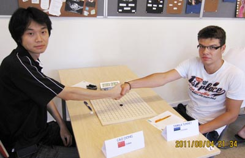
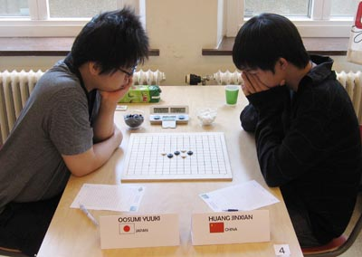
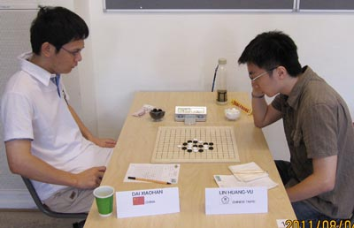

世锦赛第二轮那一刻
首页
五子棋新闻
#1 世锦赛第二轮那一刻 作者：蓝天蓝 发表时间：2011-8-5 22:44:38
世锦赛第二轮那一刻
作者：通讯员
原文网址链接：http://www.rifchina.com/Article/ShowArticle.asp?ArticleID=6459

曹冬VS 爱沙尼亚特・泰姆拉

日本选手大角友希(Osumi Yuki )VS黄金贤

戴晓涵VS中华台北林皇羽 (Lin Huang-Yu)
［ 被感动的人 于 2011-8-5 22:44:57 时花20金币送鲜花一朵］
［ 掌棋宣传员 于 2011-8-6 11:41:34 时花20金币送鲜花一朵］
［ 掌棋宣传员 于 2011-8-6 11:41:36 时花20金币送鲜花一朵］
#2 Re:世锦赛第二轮那一刻 作者：忧郁的双眼 发表时间：2011-8-5 22:50:24
第二张照片还不如不照呢哈哈~
#3 Re:世锦赛第二轮那一刻 作者：明年近日 发表时间：2011-8-5 22:51:11
哦哦
#4 Re:世锦赛第二轮那一刻 作者：雅匪 发表时间：2011-8-6 0:37:09
目前看来，以图看来，还是第一图中国人最不憔悴
#5 Re:世锦赛第二轮那一刻 作者：小元 发表时间：2011-8-6 10:01:46
赚金币押注。
#6 Re:世锦赛第二轮那一刻 作者：傀儡 发表时间：2011-8-6 10:47:10
棋碗好精致啊~~~~
#7 Re:世锦赛第二轮那一刻 作者：小马甲 发表时间：2011-8-6 11:11:15
只有3张照片？
#8 Re:世锦赛第二轮那一刻 作者：珍惜你和我 发表时间：2011-8-6 11:26:04
混混干嘛捂住脸 难道害羞了
难道害羞了
#9 Re:世锦赛第二轮那一刻 作者：明年近日 发表时间：2011-8-6 11:27:55
感觉还是小天杀气重
#10 Re:世锦赛第二轮那一刻 作者：dbycz 发表时间：2011-8-6 12:11:12
小天看上去很憔悴